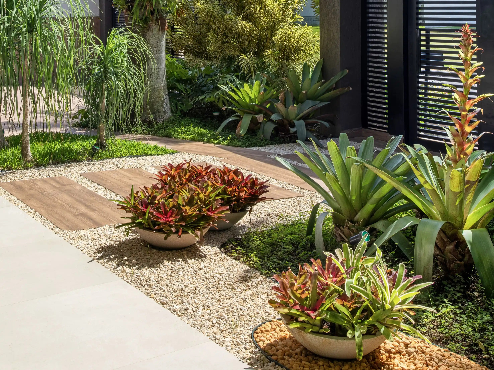
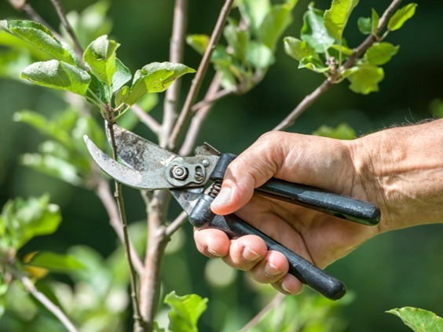
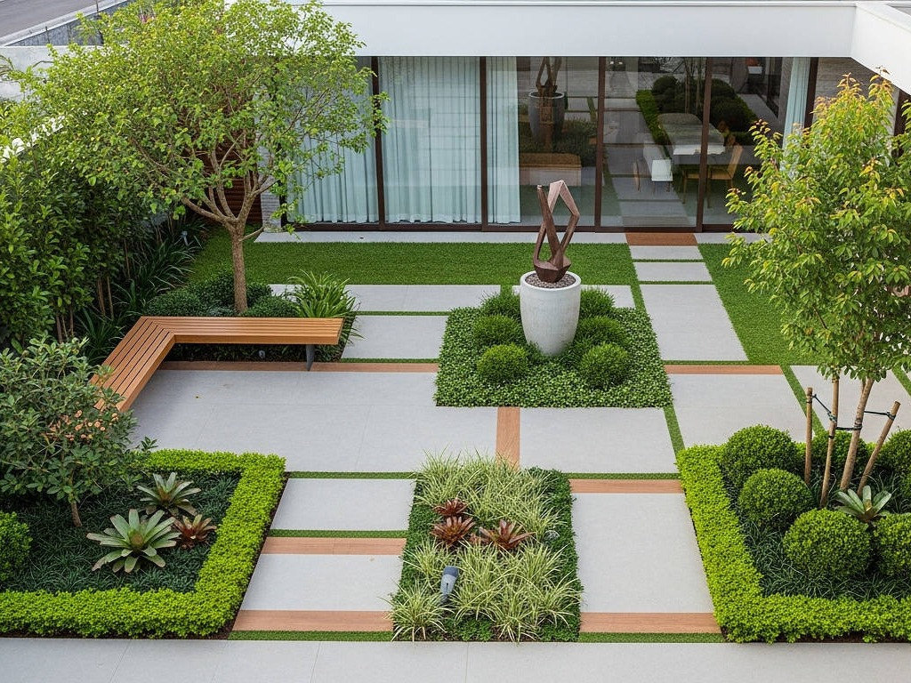

Manutenção de Jardins

Conservação periódica para manter seu jardim sempre saudável.
A Gomes Jardinagem é uma empresa especializada em jardinagem e paisagismo, oferecendo soluções para residências, condomínios e empresas. Nosso objetivo é criar ambientes mais bonitos, harmoniosos e sustentáveis.

Conservação periódica para manter seu jardim sempre saudável.

Poda preventiva e estética realizada com segurança.

Projetos personalizados para valorizar seu espaço.